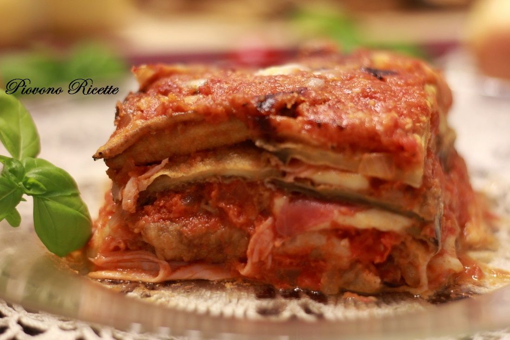

Per preparare la focaccia barese, iniziate lessando una patata in acqua bollente, quindi pelatela e schiacciatela con uno schiacciapatate. Dopodichè versate la farina di grano tenero “0” e la semola rimacinata di grano duro nella tazza di una planetaria. Se non possedete una planetaria, versate in una ciotola per poi impastare a mano. Aggiungete anche la patata schiacciata, il sale ed il lievito madre in un pezzo unico da 200 g. Ricordatevi che il lievito madre dovrà essere rinfrescato da almeno 4 ore. Incorporate un po’ d’acqua e azionate la planetaria a bassa velocità, aggiungendo il resto dell’acqua a filo. Se vi accorgete di lavorare in un ambiente caldo vi consigliamo di aggiungere l’acqua molto fredda, altrimenti dovrà essere a temperatura ambiente; in tutto vi serviranno 300-350 ml di acqua. Per ultimo unite l’olio, che servirà a dare elasticità e croccantezza al prodotto. Dopo i primi 5 minuti aumentate la velocità della planetaria e continuate ad impastare per 15 minuti: bisognerà lavorare l’impasto finché non si staccherà bene dalla ciotola e risulterà completamente liscio ed elastico, cioè quando inizierà a “scoppiettare”, rumore che fa l’impasto quando si riempie di bolle e viene lavorato velocemente . Se vi accorgete che l’impasto fatica a staccarsi dalla ciotola potete aggiungere un pizzico di farina ai bordi della ciotola della planetaria per facilitare l’operazione. Fate attenzione a non aggiungere troppa farina per evitare di indurire troppo l’impasto. Una volta che l’impasto sarà pronto, staccatelo dal gancio. Oliate il piano di lavoro, che non dovrà essere di legno altrimenti l’olio lascerà una macchia indelebile, e sistemate l’impasto, rigirandolo per oliarlo da entrambi i lati. Lavoratelo quanto basta per formare due palline da circa 400 g l’una. Prendete un vassoio di media misura e oliatelo, aiutandovi con un pennello per cospargere meglio l’olio. E’ importante che il vassoio non sia troppo grande per far sì che le due forme di impasto siano vicine. La vicinanza, infatti, gli permetterà di crescere meglio. Dopodichè sistemate le palline di impasto nel vassoio oliato. Questa è la fase della lievitazione: lasciate l’impasto a temperatura ambiente, senza coprirlo, per circa 8-12 ore. Se vi trovate in un ambiente che supera i 20°, il vostro impasto lieviterà in 8 ore; se, invece, il vostro ambiente sarà tra i 15° e i 20° ci potranno volere anche 12 ore. Trascorso questo tempo noterete che il vostro impasto sarà lievitato e avrà formato una leggera crosticina in superficie . Per sapere se l’impasto è lievitato correttamente e non è collassato, occorrerà fare una prova: schiacciate leggermente la superficie dell’impasto con un dito, la pasta dovrà ritornare alla forma iniziale perché sufficientemente elastica. Ora che il vostro impasto è pronto, potete stendere e condire la focaccia: prendete una teglia del diametro di 32 cm e oliatela, spargendo l’olio in tutta la teglia con le mani o un pennello. Adagiatevi una pallina di impasto al centro, capovolgendola per oliarla da entrambi i lati, e schiacciate l’impasto con le dita per stenderlo fino a coprire l’intera superficie della teglia. Una volta steso l’impasto, rompete i pomodorini a metà con le mani per far colare tutto il succo e i semi e disponeteli rivolti verso il basso, fino a riempire tutta la superficie della focaccia. Mettete ora le olive, oliate nuovamente, aggiungete un pizzico di sale e dell’origano secco. Fate cuocere la vostra focaccia in forno statico (o ventilato) preriscaldato alla massima potenza per 20 minuti.
Pulite le cozze. Mettete i frutti di mare in una bacinella piena d’acqua e sciacquateli. Con un coltello eliminate tutte le impurità che compaiono sul loro guscio. Togliete anche la barbetta, o bisso, che esce dalle valve strappandola con le dite. Risciacquatele, continuando a sfregarle con una spugnetta ruvida, asciugatele e saranno pronte per essere cucinate.Ovviamente, il consiglio è quello di utilizzare molluschi freschi, dal colore nero lucente e dall’odore gradevole. In alternativa, potete usare cozze surgelate. Nella maggior parte dei casi le potrete acquistare già sgusciate. Fatele scongelare in frigorifero prima di procedere con la loro cottura.Mettetele in una padella dal fondo largo e fate cuocere a fiamma alta fino a che le prime si aprono. Spegnete il fuoco e coprite con un coperchio fino a che tutti i gusci si siano aperti. Togliete le cozze dalla loro acqua e eliminate i gusci. Mettete le cozze da parte e filtrate l'acqua delle cozze.Lavate i pomodorini e fateli sbollentare per qualche minuto in acqua bollente. Spellate i pomodori e tagliateli a pezzettini. Versate dell’olio in una casseruola, aggiungete lo spicchio d’aglio tritato. Quando comincia a soffriggere aggiungete il pomodoro e lasciate cuocere per un paio di minuti. Se il sugo inizia a tirare troppo (ad asciugarsi) aggiungete 1-2 cucchiai di brodo di cozze filtrato e lasciate cuocere per una ventina di minuti a fuoco bassissimo. Aggiungete il peperoncino e fate andare il sugo per qualche minuto. Più il peperoncino cuoce e più la pasta sarà piccante. Quando il sugo è pronto spegnete il fuoco, aggiungete le cozze che avevate messo da parte e il prezzemolo tritato. - Se le cozze cuociono troppo diventano gommose. Cuocete gli spaghetti fino a metà cottura in abbondante acqua (poco) salata. Scolateli e terminate la cottura nell'acqua filtrata delle cozze. L'amido della pasta renderà il sughetto delicato e avvolgente. Quando gli spaghetti saranno al dente, togliete il tegame dal fuoco e unite il sugo di pomodoro e cozze. Mescolate bene perché gli ingredienti siano ben amalgamati. Se necessario aggiungete dell’acqua di cottura della pasta e del prezzemolo
Mondare le melanzane e lavarle. Tagliare a fette nel senso della lunghezza e con uno spessore di circa 1 cm, quindi passarle prima nella farina e poi nell'uovo sbattuto, quindi friggerle per pochi minuti in una padella con olio abbondante avendo cura di cuocerle da entrambi i lati e quando pronte posarle su un piatto con alla base carta da cucina in modo da assorbire l'olio in eccesso. Intanto preparare il sugo. Realizzare un soffritto con una cipolla piccola finemente tritata, quindi versare la passata di pomodoro quando la cipolla si fa dorata. Fare addensare il sugo (senza farlo restringere troppo) a fiamma bassa e condire con sale e pepe quanto basta. La parmigiana di melanzane va realizzata "a strati". Versare un mestolino di sugo sulla base di una teglia da forno. Senza sovrapporle, disporre un primo strato di melanzane, sul quale disporremo la mozzarella ed il basilico, quindi un altro strato di sugo ed una spolverata di parmigiano. Ripetere questa operazione altre due volte ed infornare la teglia per 30 minuti nel forno preriscaldato a 200°.
